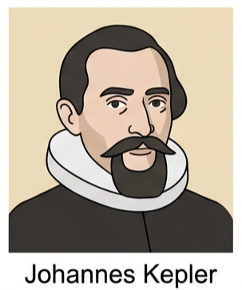
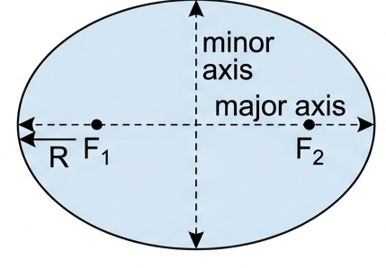
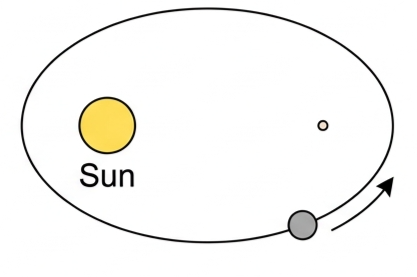
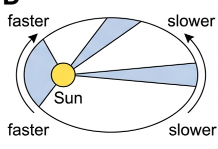
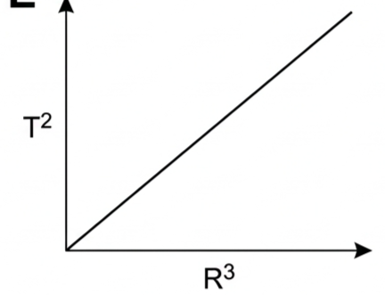
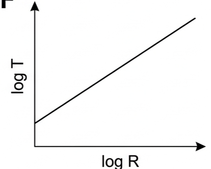
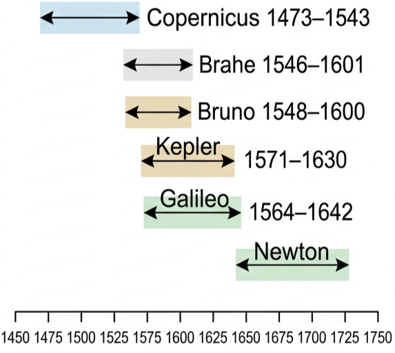
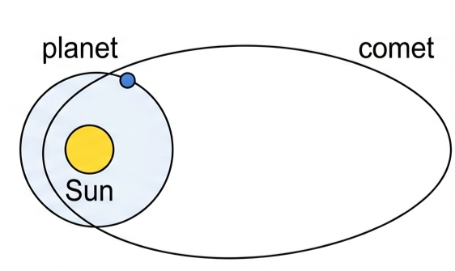

Part of D.1 Gravitational Fields · Unit D — IB Physics 2023
5 Lesson 5 of 6 · D.1 Gravitational Fields
Kepler's Laws of Planetary Motion
Tycho Brahe spent decades measuring the sky by eye, before the telescope existed. Johannes Kepler spent years fighting Brahe's data on Mars, trying to force it into a circle — and failed. The shape that finally fit was an ellipse, and from it came three laws that describe every orbit in the Solar System, seventy years before Newton explained why they work.
🔭 Hook – the astronomer who couldn't make Mars fit
For nearly 2000 years, the accepted explanation for why things fall was Aristotle's: objects simply return to their "natural" place. Testing any real theory of gravity needs objects moving over huge distances, unaffected by air resistance — the planets and the Moon. The Danish nobleman Tycho Brahe supplied exactly that: astonishingly precise naked-eye measurements of planetary positions, made before the telescope existed (late 16th century) — but data alone, with no explanation.

Fig 1 — Johannes Kepler, 1610: analysed Tycho Brahe's naked-eye observations of Mars.
💡 Diagnostic question — Kepler tried for years to fit Brahe's Mars data to a circular orbit and it never quite worked, the errors were small but persistent. What does that tell you about circular orbits as a model of the Solar System? They're a good first approximation but not exact — planetary orbits are actually ellipses, just ones with a shape (eccentricity) close enough to a circle that the difference is easy to miss with clumsy data. Brahe's measurements were accurate enough that Kepler couldn't ignore the small discrepancy.
📐 The ellipse: an orbit's true shape
An ellipse is a closed curve with a simple defining property: for every point on it, the sum of the distances to two fixed points is always the same. Those two fixed points, \(\mathrm{F}_1\) and \(\mathrm{F}_2\), are each called a focus of the ellipse (plural: foci).
If \(\mathrm{F}_1\) and \(\mathrm{F}_2\) move together to the same point at the centre, the ellipse becomes a circle — a circle is just a special case of an ellipse with zero eccentricity.

Fig 2 — An ellipse: major axis, minor axis, and foci F₁, F₂. If F₁ and F₂ coincided at the centre, this would be a circle.
1️⃣ Kepler's First Law – the shape of the orbit
Kepler showed that planets move in elliptical paths, not circles:
The planets orbit in elliptical paths, with the Sun at one of the two foci.
Note the Sun sits at a focus, not at the centre of the ellipse. In practice, most Solar System orbits are nearly circular — Fig 3 exaggerates the eccentricity so the geometry is visible.

Fig 3 — Elliptical path of a planet: the Sun sits at one focus, the other focus is empty.
2️⃣ Kepler's Second Law – equal areas in equal times
This law captures something Brahe's data also showed: planets speed up as they get closer to the Sun.
A line joining a planet and the Sun sweeps out equal areas in equal times.
Because the planet is closer to the Sun on one side of the ellipse, an equal-area sweep there needs a shorter arc travelled in the same time near the Sun, and a longer arc travelled far from it — so the planet moves faster at closest approach and slower at its most distant point.

Fig 4 — Equal areas in equal times: the shaded sectors are equal in area, so the planet moves faster when its sector is near the Sun.
3️⃣ Kepler's Third Law – period and radius
The third law relates a planet's orbital time period \(T\) to \(R\), half the length of the major axis. Since most orbits are close to circular, \(R\) can usually be treated as the average orbital radius:
Kepler's third law
$$T^2 \propto R^3$$
$$\frac{R^3}{T^2} = \text{constant}$$
The constant is the same for every body orbiting the same central mass — every planet orbiting the Sun gives the same value of \(R^3/T^2\), but a satellite orbiting the Earth gives a different constant.
The Earth's average distance from the Sun, \(1.50\times10^{11}\) m, is defined as one astronomical unit (AU) — a convenient yardstick for Solar System distances.
🔗 Linking question — how is uniform circular motion (Topic A.4) like real orbits, and how is it different? Both involve a centripetal force directed towards a fixed centre. Uniform circular motion has constant speed and radius by definition; a real elliptical orbit only matches that description in the special case of a circular orbit — otherwise speed and radius both vary continuously, governed by Kepler's second law.
📈 Reading Kepler's third law from a graph
Graph type
Axes (X, Y)
Shape
What to read
T² vs R³
R³ · T²
Straight line through the origin
Gradient = the constant R³/T² — same value for every planet orbiting that star
log T vs log R
log R · log T
Straight line, gradient \(\tfrac{3}{2}\)
A gradient of 1.5 confirms the power law T² ∝ R³ across a wide range of R without needing huge axis scales

Fig 5 — T² vs R³: a straight line through the origin, gradient = 1/(constant).

Fig 6 — log T vs log R: straight line, gradient 3/2, confirming the power law.
✍️ Worked Example D1.1
The average distance between the Sun and Venus is \(1.08\times10^{11}\) m. Calculate the time period of Venus's orbit.
1
Identify: \(R^3/T^2\) is the same constant for every planet orbiting the Sun, so Earth's known values (\(T=365.25\) days, \(R=1.496\times10^{11}\) m) can be used as the reference.
2
Data: \(R_{\text{Venus}} = 1.08\times10^{11}\) m, \(T_{\text{Earth}}=365.25\) days, \(R_{\text{Earth}}=1.496\times10^{11}\) m
Fig 7 — Venus orbits closer to the Sun than the Earth, so its period is shorter.
🌍 Nature of Science – standing on the shoulders of giants
Newton's law of gravitation explained Kepler's laws seventy years after Kepler published them — and Newton himself credited his predecessors: "If I have seen further, it is by standing on the shoulders of giants." Copernicus published a heliocentric model in 1530, challenging 2000 years of geocentric belief dating back to Ptolemy and Aristotle (though Aristarchus of Ancient Greece proposed a heliocentric model even earlier). Bruno went further, arguing the Sun was just an ordinary star in an infinite universe — he was burned at the stake in 1600. Galileo used the newly invented telescope to observe Jupiter's moons and was tried by the Church for supporting Copernicus, spending his final years under house arrest.

Fig 9 — Timeline of early astronomers: Copernicus (1473–1543), Brahe (1546–1601), Bruno (1548–1600), Kepler (1571–1630), Galileo (1564–1642), Newton (1643–1727).
✓ Examiner tip: about 700 years before Newton, during the Islamic Golden Age, astronomers such as Abd al-Rahman al-Sufi catalogued stars and constellations with great accuracy, building on Ptolemy's earlier work — a reminder that science accumulates across cultures and centuries, not in isolated leaps.
🚀 HL extension – deriving the third law
Kepler's third law is empirical, but Newton's law of gravitation derives it directly. For a circular orbit, gravity provides the centripetal force (Lesson 4):
$$\frac{GM}{r^2} = \frac{4\pi^2 r}{T^2}$$
Rearranging gives \(T^2 = \left(\dfrac{4\pi^2}{GM}\right)r^3\) — exactly Kepler's third law, with the "constant" identified as \(4\pi^2/GM\).
Challenge: using Earth's orbital data (\(T=1\) year \(=3.156\times10^7\) s, \(R=1.496\times10^{11}\) m), estimate the mass of the Sun. Answer: \(M=\dfrac{4\pi^2 R^3}{GT^2}=\dfrac{4\pi^2(1.496\times10^{11})^3}{(6.67\times10^{-11})(3.156\times10^7)^2}\approx2.0\times10^{30}\) kg.
⚠️ Trap corner – common mistakes
Misconception
Correct view
Kepler's third law says T is proportional to R³
It's T² that is proportional to R³ — squaring the period, not the period itself
The Sun sits at the centre of a planet's elliptical orbit
The Sun sits at one focus, which is offset from the centre (unless the orbit happens to be circular)
A planet moves at constant speed around its orbit
Kepler's second law says the opposite: speed varies continuously, fastest when nearest the Sun
R³/T² has the same value for any two orbiting bodies you compare
It's only the same constant for bodies orbiting the same central mass — planets around the Sun give one constant, satellites around the Earth give a different one
⚠️ Most common slip: comparing a satellite's R³/T² directly against a planet's, or mixing units (days with seconds, km with m) across the two sides of the ratio. Keep the central body and the units consistent on both sides.
T² ∝ R³R³/T² = constant (same central body)Ellipse: sum of distances to 2 foci is constantSun at one focus, not the centreEqual areas in equal times → faster near Sun1 AU = 1.50×10¹¹ mKepler: empirical; Newton explained it 70 yrs laterFoci coincide → ellipse becomes a circle
Practice check — multiple choice
1. According to Kepler's first law, the shape of a planet's orbit is
A a perfect circle centred on the Sun
B a parabola with the Sun at its vertex
C an ellipse with the Sun at one focus
D an ellipse with the Sun at the centre
2. By Kepler's second law, a planet moves fastest when it is
A farthest from the Sun
B closest to the Sun
C at either end of the minor axis
D its speed never changes
3. Kepler's third law can be written as
A T ∝ R
B T² ∝ R³
C T³ ∝ R²
D T ∝ R³
4. Mars and Jupiter both orbit the Sun. Calculating R³/T² for each planet should give
A a different value for each planet
B the same value for both planets
C a value proportional to each planet's own mass
D zero
5. Kepler's three laws were empirical. Who first explained the underlying physics behind them, and roughly how long after Kepler?
A Tycho Brahe, immediately
B Galileo, about 30 years later
C Isaac Newton, about 70 years later
D Copernicus, about 100 years earlier
Practice check — fill in the blanks
Complete the statements:
An ellipse is a closed curve for which the sum of distances to two fixed points, called the , is always the same. Kepler's First Law places the Sun at one of each planet's orbit, not at its centre. Kepler's Second Law states that a line from the Sun to a planet sweeps out equal in equal times, so the planet moves when it is closer to the Sun. Kepler's Third Law can be written \(T^2 \propto R^{\text{}}\). One is defined as the Earth's average distance from the Sun.
Exam‑style questions
Exam question · Calculate
Q1. The average distance between Mars and the Sun is 228 million km. Calculate the time period of Mars's orbit. [3 marks]
✓ \(R_{\text{Mars}} = 2.28\times10^{11}\) m \(= 1.524\) AU (using \(R_{\text{Earth}}=1.496\times10^{11}\) m). ✓ For orbits around the Sun, \(T\) in years \(= R^{3/2}\) when \(R\) is in AU: \(T = 1.524^{1.5}\). ✓ \(T \approx 1.88\) years \(\approx 687\) days.
Exam question · Determine · Research
Q2. A planet in the Solar System has an orbital period of approximately 84 years. a Determine its distance from the Sun. b Express your answer to part a in astronomical units, AU. c Identify which planet this is. [5 marks]
✓ (a, b) With \(T\) in years and \(R\) in AU, \(R = T^{2/3} = 84^{2/3} \approx 19.2\) AU. ✓ In metres: \(R \approx 19.2 \times 1.50\times10^{11} \approx 2.88\times10^{12}\) m. ✓ (c) This is Uranus (period ≈ 84.0 years, mean distance ≈ 19.2 AU).
Exam question · Research · Calculate
Q3.a Research how long the Moon takes to orbit the Earth. b The centre of the Moon is an average distance of 384 000 km from the centre of the Earth. Calculate a value of \(T^2/R^3\) from this data. c Use Kepler's third law to determine the orbital radius of an Earth satellite that takes exactly one day to complete its orbit. [6 marks]
✓ (a) The Moon's orbital period is about 27.3 days. ✓ (b) \(T=27.3\) days \(=2.36\times10^6\) s, \(R=3.84\times10^8\) m. ✓ \(T^2/R^3 = (2.36\times10^6)^2/(3.84\times10^8)^3 \approx 9.8\times10^{-14}\ \text{s}^2\text{m}^{-3}\) — this is the constant for anything orbiting the Earth. ✓ (c) For \(T=1\) day \(=8.64\times10^4\) s: \(R^3 = T^2/(9.8\times10^{-14}) \Rightarrow R\approx4.2\times10^7\) m — the geostationary radius.
Exam question · Discuss
Q4. The Earth's orbit around the Sun is not perfectly circular. a State the Earth's maximum and minimum separation from the Sun, and when each occurs. b Discuss what effect this has on the climate at any particular location, if any. [4 marks]
✓ (a) Maximum separation (aphelion) ≈ 1.52×10¹¹ m, around early July. Minimum separation (perihelion) ≈ 1.47×10¹¹ m, around early January. ✓ The difference is only about 3–4% of the average distance. ✓ (b) This small variation is not the cause of the seasons — axial tilt is. Proof: the Northern Hemisphere has winter in January, despite the Earth being closest to the Sun then. ✓ The eccentricity has only a minor effect on overall global temperature, slightly moderating Southern Hemisphere summers and winters relative to the Northern Hemisphere's.
Exam question · State · Explain
Q5. Fig 8 shows the orbits of a planet and a comet around the Sun. a State how you know which orbit belongs to which body. b At what positions will the comet be travelling i fastest ii slowest? [4 marks]

Fig 8 — The orbits of a planet and a comet around the Sun.
✓ (a) The small, nearly circular orbit is the planet's — real planetary orbits have low eccentricity. The large, highly elongated ellipse is the comet's — comets typically have very eccentric orbits. ✓ (b) i. Fastest at perihelion, the point of closest approach to the Sun. ✓ ii. Slowest at aphelion, the point farthest from the Sun (Kepler's second law: equal areas in equal times).
Exam question · Determine
Q6. Determine the value of \(T^2/R^3\) in SI units for the planets of the Solar System, and comment on your results. [4 marks]
✓ Earth: \(T=3.156\times10^7\) s, \(R=1.496\times10^{11}\) m → \(T^2/R^3 \approx 2.97\times10^{-19}\ \text{s}^2\text{m}^{-3}\). ✓ Mars: \(T=5.94\times10^7\) s, \(R=2.28\times10^{11}\) m → \(T^2/R^3 \approx 2.98\times10^{-19}\ \text{s}^2\text{m}^{-3}\). ✓ Jupiter: \(T=3.74\times10^8\) s, \(R=7.79\times10^{11}\) m → \(T^2/R^3 \approx 2.97\times10^{-19}\ \text{s}^2\text{m}^{-3}\). ✓ All three give the same value (within rounding) — confirming Kepler's third law. This constant equals \(4\pi^2/GM_{\text{Sun}}\), so it is fixed by the Sun's mass alone.